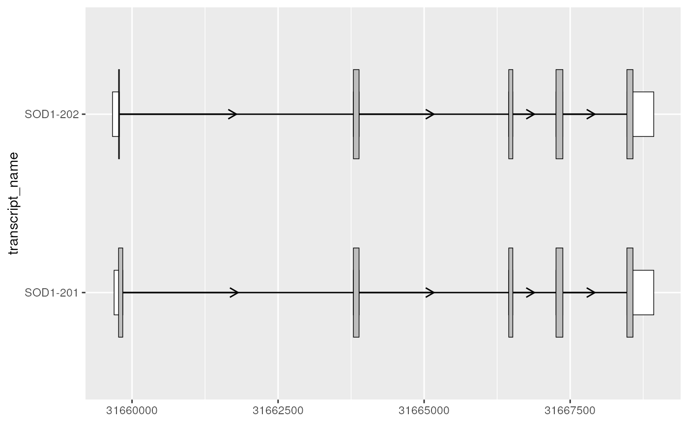
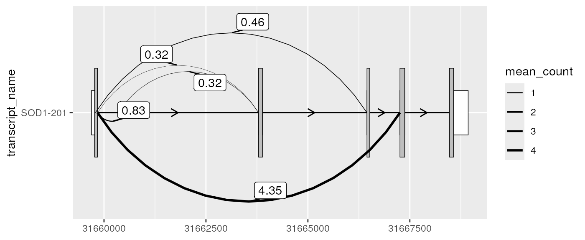
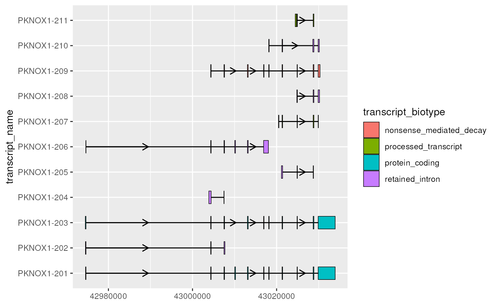
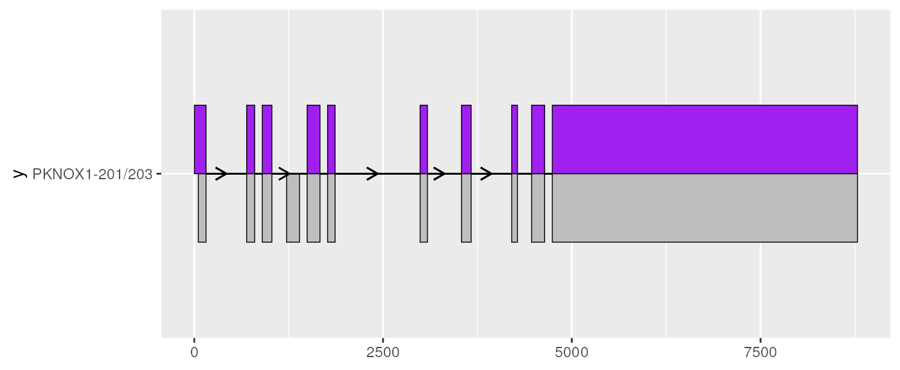

Getting started
David Zhang
UCLdyzhang32@gmail.com Source:
vignettes/ggtranscript.Rmd
ggtranscript.Rmdggtranscript is designed to make it easy to visualize
transcript structure and annotation using ggplot2.
As the intended users are those who work with genetic and/or
transcriptomic data in R, this tutorial assumes a basic
understanding of transcript annotation and familiarity with
ggplot2.
Basic usage
Required aesthetics
ggtranscript introduces 5 new geoms designed to simplify
the visualization of transcript structure and annotation;
geom_range(), geom_half_range(),
geom_intron(), geom_junction() and
geom_junction_label_repel(). The required aesthetics
(aes()) for these geoms are designed to match the data
formats which are widely used in genetic and transcriptomic
analyses:
| Required aes() | Type | Description | Required by |
|---|---|---|---|
| xstart | integer | Start position in base pairs | All geoms |
| xend | integer | End Geonmic position in base pairs | All geoms |
| y | charactor or factor | The group used for the y axis, most often a transcript id or name | All geoms |
| label | integer or charactor | Variable used to label junction curves | Only geom_junction_label_repel() |
Input data
In order to showcase the package’s functionality,
ggtranscript includes example transcript annotation for the
genes SOD1 and PKNOX1, as well as a set of unannotated
junctions associated with SOD1. These specific genes are
unimportant, chosen arbitrarily for illustration. However, it worth
noting that the input data for ggtranscript, as a
ggplot2 extension, is required be a data.frame
or tibble.
You may be asking, what if I have GenomicRanges object?
If not, feel free to ignore this. Almost always, you can easily
transform GenomicRanges into a data.frame
using a helper function such as as.data.frame().
sod1_annotation %>% head()
#> # A tibble: 6 × 8
#> seqnames start end strand type gene_name transcript_name transcript_biot…
#> <fct> <int> <int> <fct> <fct> <chr> <chr> <chr>
#> 1 21 3.17e7 3.17e7 + gene SOD1 NA NA
#> 2 21 3.17e7 3.17e7 + tran… SOD1 SOD1-202 protein_coding
#> 3 21 3.17e7 3.17e7 + exon SOD1 SOD1-202 protein_coding
#> 4 21 3.17e7 3.17e7 + CDS SOD1 SOD1-202 protein_coding
#> 5 21 3.17e7 3.17e7 + star… SOD1 SOD1-202 protein_coding
#> 6 21 3.17e7 3.17e7 + exon SOD1 SOD1-202 protein_coding
pknox1_annotation %>% head()
#> # A tibble: 6 × 8
#> seqnames start end strand type gene_name transcript_name transcript_biot…
#> <fct> <int> <int> <fct> <fct> <chr> <chr> <chr>
#> 1 21 4.30e7 4.30e7 + gene PKNOX1 NA NA
#> 2 21 4.30e7 4.30e7 + tran… PKNOX1 PKNOX1-203 protein_coding
#> 3 21 4.30e7 4.30e7 + exon PKNOX1 PKNOX1-203 protein_coding
#> 4 21 4.30e7 4.30e7 + exon PKNOX1 PKNOX1-203 protein_coding
#> 5 21 4.30e7 4.30e7 + exon PKNOX1 PKNOX1-203 protein_coding
#> 6 21 4.30e7 4.30e7 + exon PKNOX1 PKNOX1-203 protein_coding
sod1_junctions
#> # A tibble: 5 × 5
#> seqnames start end strand mean_count
#> <fct> <int> <int> <fct> <dbl>
#> 1 chr21 31659787 31666448 + 0.463
#> 2 chr21 31659842 31660554 + 0.831
#> 3 chr21 31659842 31663794 + 0.316
#> 4 chr21 31659842 31667257 + 4.35
#> 5 chr21 31660351 31663789 + 0.324Plotting exons and introns
In the simplest case, the core components of transcript structure are
exons and introns, which can be plotted using geom_range()
and geom_intron(). In order to facilitate this,
ggtranscript also provides to_intron(), which
converts exon co-ordinates into introns. Therefore, you can plot
transcript structures with only exons as input and just a few lines of
code.
📌: As
ggtranscriptgeoms share required aesthetics, it is recommended to set these viaggplot(), rather than in the individualgeom_*()calls to avoid code duplication.
# to illustrate the package's functionality
# ggtranscript includes example transcript annotation
sod1_annotation %>% head()
#> # A tibble: 6 × 8
#> seqnames start end strand type gene_name transcript_name transcript_biot…
#> <fct> <int> <int> <fct> <fct> <chr> <chr> <chr>
#> 1 21 3.17e7 3.17e7 + gene SOD1 NA NA
#> 2 21 3.17e7 3.17e7 + tran… SOD1 SOD1-202 protein_coding
#> 3 21 3.17e7 3.17e7 + exon SOD1 SOD1-202 protein_coding
#> 4 21 3.17e7 3.17e7 + CDS SOD1 SOD1-202 protein_coding
#> 5 21 3.17e7 3.17e7 + star… SOD1 SOD1-202 protein_coding
#> 6 21 3.17e7 3.17e7 + exon SOD1 SOD1-202 protein_coding
# extract exons
sod1_exons <- sod1_annotation %>% dplyr::filter(type == "exon")
sod1_exons %>%
ggplot(aes(
xstart = start,
xend = end,
y = transcript_name
)) +
geom_range(
aes(fill = transcript_biotype)
) +
geom_intron(
data = to_intron(sod1_exons, "transcript_name"),
aes(strand = strand)
)
Differentiating UTRs from the coding sequence
As suggested by it’s name, geom_range() is designed to
visualize range-based transcript annotation. This includes but is not
limited to exons. For instance, for protein coding transcripts it can be
useful to visually distinguish the coding sequence (CDS) of a transcript
from it’s UTRs. This can be achieved by adjusting the height and fill of
geom_range() and overlaying the CDS on top of the exons
(including UTRs).
# filter for only exons from protein coding transcripts
sod1_exons_prot_cod <- sod1_exons %>%
dplyr::filter(transcript_biotype == "protein_coding")
# obtain cds
sod1_cds <- sod1_annotation %>% dplyr::filter(type == "CDS")
sod1_exons_prot_cod %>%
ggplot(aes(
xstart = start,
xend = end,
y = transcript_name
)) +
geom_range(
fill = "white",
height = 0.25
) +
geom_range(
data = sod1_cds
) +
geom_intron(
data = to_intron(sod1_exons_prot_cod, "transcript_name"),
aes(strand = strand),
arrow.min.intron.length = 500,
)
Plotting junctions
geom_junction() plots curved lines that are intended to
represent junction reads. Junctions are reads obtained through
RNA-sequencing (RNA-seq) data that map with gapped alignment to the
genome. Often, this gap is indicative of a splicing event, but can also
originate from other genomic events such as indels.
It can be useful to visually overlay junctions on top of an existing transcript structure. For example, this can help to understand which existing transcripts are expressed in the RNA-seq sample or inform the location or interpretation of the novel splice sites.
geom_junction_label_repel() adds labels to junction
curves. This can useful for labeling junctions with a measure of their
expression or support such as read counts or percent-spliced-in.
Alternatively, you may choose to visually map this measure to the
thickness of the junction curves by adjusting the the size
aes(). Or, as shown below, both of these options can be
combined.
# extract exons and cds for the MANE-select transcript
sod1_201_exons <- sod1_exons %>% dplyr::filter(transcript_name == "SOD1-201")
sod1_201_cds <- sod1_cds %>% dplyr::filter(transcript_name == "SOD1-201")
# add transcript name column to junctions for plotting
sod1_junctions <- sod1_junctions %>% dplyr::mutate(transcript_name = "SOD1-201")
sod1_201_exons %>%
ggplot(aes(
xstart = start,
xend = end,
y = transcript_name
)) +
geom_range(
fill = "white",
height = 0.25
) +
geom_range(
data = sod1_201_cds
) +
geom_intron(
data = to_intron(sod1_201_exons, "transcript_name")
) +
geom_junction(
data = sod1_junctions,
aes(size = mean_count),
junction.y.max = 0.5
) +
geom_junction_label_repel(
data = sod1_junctions,
aes(label = round(mean_count, 2)),
junction.y.max = 0.5
) +
scale_size_continuous(range = c(0.1, 1))
Visualizing transcript structure differences
Context
One of the primary reasons for visualizing transcript structures is to better observe the differences between them. Although this can be achieved by simply plotting the exons and introns as shown in basic usage, for longer, more complex transcripts this may not be as straight forward. For example, let’s take a look at the gene PKNOX1.
📌Note: For shorter introns, strand arrows may overlap exons. In such cases, the
arrow.min.intron.lengthparameter ofgeom_intron()can be used to set the minimum intron length for a strand arrow to be plotted.
# extract exons
pknox1_exons <- pknox1_annotation %>% dplyr::filter(type == "exon")
pknox1_exons %>%
ggplot(aes(
xstart = start,
xend = end,
y = transcript_name
)) +
geom_range(
aes(fill = transcript_biotype)
) +
geom_intron(
data = to_intron(pknox1_exons, "transcript_name"),
aes(strand = strand),
arrow.min.intron.length = 3500
)
PKNOX1 has relatively long introns (compared to it’s exons), which makes comparison between transcript structures more difficult, especially small differences in exons.
Improving transcript structure visualisation using
shorten_gaps()
ggtranscript provides the helper function
shorten_gaps(), which reduces the size of the gaps (regions
that do not overlap an intron). shorten_gaps() then
rescales the exon and intron co-ordinates, preserving the original exon
alignment. This allows you to hone in the differences of interest, such
as the exonic structure.
📌: The rescaled co-ordinates returned by
shorten_gaps()will not match the original genomic positions. Therefore, it is recommended that you restrictshorten_gaps()usage for visualization purposes only.
# extract exons
pknox1_exons <- pknox1_annotation %>% dplyr::filter(type == "exon")
pknox1_rescaled <- shorten_gaps(
exons = pknox1_exons,
introns = to_intron(pknox1_exons, "transcript_name"),
group_var = "transcript_name"
)
# shorten_gaps() returns exons and introns all in one data.frame()
# let's split these for plotting
pknox1_rescaled_exons <- pknox1_rescaled %>% dplyr::filter(type == "exon")
pknox1_rescaled_introns <- pknox1_rescaled %>% dplyr::filter(type == "intron")
pknox1_rescaled_exons %>%
ggplot(aes(
xstart = start,
xend = end,
y = transcript_name
)) +
geom_range(
aes(fill = transcript_biotype)
) +
geom_intron(
data = pknox1_rescaled_introns,
aes(strand = strand),
arrow.min.intron.length = 300
)Comparing between two transcripts using
geom_half_range()
If you are interested specifically in the differences between two
transcripts, you can use geom_half_range() whilst adjusting
range.orientation to plot the exons from each on the
opposite sides of the transcript structure. This can reveal small
differences in exon structure, such as those observed here at the 3’
ends of PKNOX1-201 and PKNOX1-203.
# extract the two transcripts to be compared
pknox1_rescaled_201_exons <- pknox1_rescaled_exons %>%
dplyr::filter(transcript_name == "PKNOX1-201")
pknox1_rescaled_203_exons <- pknox1_rescaled_exons %>%
dplyr::filter(transcript_name == "PKNOX1-203")
pknox1_rescaled_201_exons %>%
ggplot(aes(
xstart = start,
xend = end,
y = "PKNOX1-201/203"
)) +
geom_half_range() +
geom_intron(
data = to_intron(pknox1_rescaled_201_exons, "transcript_name"),
arrow.min.intron.length = 300
) +
geom_half_range(
data = pknox1_rescaled_203_exons,
range.orientation = "top",
fill = "purple"
) +
geom_intron(
data = to_intron(pknox1_rescaled_203_exons, "transcript_name"),
arrow.min.intron.length = 300
)
Comparing many transcripts to a single reference transcript using
to_diff()
Sometimes, it can be useful to visualize the differences of several transcripts with respect to one transcript. For example, you may be interested in how other transcripts differ in structure to the MANE-select transcript. This exploration can reveal whether certain important regions are missing or novel regions are added, hinting at differences in transcript function.
to_diff() is a helper function designed for this
situation. Here, we apply this to PKNOX1, finding the
differences between all other transcripts and the MANE-select transcript
(PKNOX1-201).
📌: Although below, we apply
to_diff()to the rescaled exons and intron (outputted byshorten_gaps()),to_diff()can also be applied to the original, unscaled transcripts with the same effect.
mane <- pknox1_rescaled_201_exons
not_mane <- pknox1_rescaled_exons %>%
dplyr::filter(transcript_name != "PKNOX1-201")
pknox1_rescaled_diffs <- to_diff(
exons = not_mane,
ref_exons = mane,
group_var = "transcript_name"
)
pknox1_rescaled_exons %>%
ggplot(aes(
xstart = start,
xend = end,
y = transcript_name
)) +
geom_range() +
geom_intron(
data = pknox1_rescaled_introns,
arrow.min.intron.length = 300
) +
geom_range(
data = pknox1_rescaled_diffs,
aes(fill = diff_type),
alpha = 0.2
)
Integrating existing ggplot2 functionality
As a ggplot2 extension, ggtranscript
inherits ggplot2’s familiarity and flexibility, enabling
users to intuitively adjust aesthetics, parameters, scales etc as well
as complement ggtranscript geoms with existing
ggplot2 geoms to create informative, publication-ready
plots.
Below is a list outlining some examples of complementing
ggtranscript with existing ggplot2
functionality that we have found useful:
- Adding exon annotation such as exon
number/order using
geom_text() - Zooming in on areas of interest using
coord_cartesian() - Plotting mutations using
geom_point() - Plotting coverage using
geom_polygon() - Beautifying plots using themes and scales
Session info
Show/hide
#> ─ Session info ───────────────────────────────────────────────────────────────────────────────────────────────────────
#> setting value
#> version R version 4.1.2 (2021-11-01)
#> os Ubuntu 20.04.3 LTS
#> system x86_64, linux-gnu
#> ui X11
#> language en
#> collate en_US.UTF-8
#> ctype en_US.UTF-8
#> tz UTC
#> date 2022-02-28
#> pandoc 2.17.1.1 @ /usr/bin/ (via rmarkdown)
#>
#> ─ Packages ───────────────────────────────────────────────────────────────────────────────────────────────────────────
#> package * version date (UTC) lib source
#> BiocGenerics 0.40.0 2021-10-26 [1] Bioconductor
#> BiocManager 1.30.16 2021-06-15 [2] CRAN (R 4.1.2)
#> BiocStyle * 2.22.0 2021-10-26 [1] Bioconductor
#> bitops 1.0-7 2021-04-24 [1] RSPM (R 4.1.0)
#> bookdown 0.24 2021-09-02 [1] RSPM (R 4.1.0)
#> bslib 0.3.1 2021-10-06 [1] RSPM (R 4.1.0)
#> cachem 1.0.6 2021-08-19 [2] RSPM (R 4.1.0)
#> cli 3.2.0 2022-02-14 [2] RSPM (R 4.1.0)
#> colorspace 2.0-3 2022-02-21 [1] RSPM (R 4.1.0)
#> crayon 1.5.0 2022-02-14 [2] RSPM (R 4.1.0)
#> desc 1.4.0 2021-09-28 [2] RSPM (R 4.1.0)
#> digest 0.6.29 2021-12-01 [2] RSPM (R 4.1.0)
#> dplyr 1.0.8 2022-02-08 [2] RSPM (R 4.1.0)
#> ellipsis 0.3.2 2021-04-29 [2] RSPM (R 4.1.0)
#> evaluate 0.15 2022-02-18 [2] RSPM (R 4.1.0)
#> fansi 1.0.2 2022-01-14 [2] RSPM (R 4.1.0)
#> farver 2.1.0 2021-02-28 [1] RSPM (R 4.1.0)
#> fastmap 1.1.0 2021-01-25 [2] RSPM (R 4.1.0)
#> fs 1.5.2 2021-12-08 [2] RSPM (R 4.1.0)
#> generics 0.1.2 2022-01-31 [2] RSPM (R 4.1.0)
#> GenomeInfoDb 1.30.1 2022-01-30 [1] Bioconductor
#> GenomeInfoDbData 1.2.7 2022-02-07 [1] Bioconductor
#> GenomicRanges 1.46.1 2021-11-18 [1] Bioconductor
#> ggplot2 * 3.3.5 2021-06-25 [1] RSPM (R 4.1.0)
#> ggrepel 0.9.1 2021-01-15 [1] RSPM (R 4.1.0)
#> ggtranscript * 0.99.2 2022-02-28 [1] Bioconductor
#> glue 1.6.2 2022-02-24 [2] RSPM (R 4.1.0)
#> gtable 0.3.0 2019-03-25 [1] RSPM (R 4.1.0)
#> highr 0.9 2021-04-16 [2] RSPM (R 4.1.0)
#> htmltools 0.5.2 2021-08-25 [1] RSPM (R 4.1.0)
#> IRanges 2.28.0 2021-10-26 [1] Bioconductor
#> jquerylib 0.1.4 2021-04-26 [1] RSPM (R 4.1.0)
#> jsonlite 1.8.0 2022-02-22 [2] RSPM (R 4.1.0)
#> knitr 1.37 2021-12-16 [2] RSPM (R 4.1.0)
#> labeling 0.4.2 2020-10-20 [1] RSPM (R 4.1.0)
#> lifecycle 1.0.1 2021-09-24 [2] RSPM (R 4.1.0)
#> magrittr * 2.0.2 2022-01-26 [2] RSPM (R 4.1.0)
#> memoise 2.0.1 2021-11-26 [2] RSPM (R 4.1.0)
#> munsell 0.5.0 2018-06-12 [1] RSPM (R 4.1.0)
#> pillar 1.7.0 2022-02-01 [2] RSPM (R 4.1.0)
#> pkgconfig 2.0.3 2019-09-22 [2] RSPM (R 4.1.0)
#> pkgdown 2.0.2 2022-01-13 [1] RSPM (R 4.1.0)
#> purrr 0.3.4 2020-04-17 [2] RSPM (R 4.1.0)
#> R6 2.5.1 2021-08-19 [2] RSPM (R 4.1.0)
#> ragg 1.2.2 2022-02-21 [1] RSPM (R 4.1.0)
#> Rcpp 1.0.8 2022-01-13 [1] RSPM (R 4.1.0)
#> RCurl 1.98-1.6 2022-02-08 [1] RSPM (R 4.1.0)
#> rlang 1.0.1 2022-02-03 [2] RSPM (R 4.1.0)
#> rmarkdown 2.11 2021-09-14 [1] RSPM (R 4.1.0)
#> rprojroot 2.0.2 2020-11-15 [2] RSPM (R 4.1.0)
#> S4Vectors 0.32.3 2021-11-21 [1] Bioconductor
#> sass 0.4.0 2021-05-12 [1] RSPM (R 4.1.0)
#> scales 1.1.1 2020-05-11 [1] RSPM (R 4.1.0)
#> sessioninfo * 1.2.2 2021-12-06 [2] RSPM (R 4.1.0)
#> stringi 1.7.6 2021-11-29 [2] RSPM (R 4.1.0)
#> stringr 1.4.0 2019-02-10 [2] RSPM (R 4.1.0)
#> systemfonts 1.0.4 2022-02-11 [1] RSPM (R 4.1.0)
#> textshaping 0.3.6 2021-10-13 [1] RSPM (R 4.1.0)
#> tibble 3.1.6 2021-11-07 [2] RSPM (R 4.1.0)
#> tidyselect 1.1.2 2022-02-21 [2] RSPM (R 4.1.0)
#> utf8 1.2.2 2021-07-24 [2] RSPM (R 4.1.0)
#> vctrs 0.3.8 2021-04-29 [2] RSPM (R 4.1.0)
#> withr 2.4.3 2021-11-30 [2] RSPM (R 4.1.0)
#> xfun 0.29 2021-12-14 [2] RSPM (R 4.1.0)
#> XVector 0.34.0 2021-10-26 [1] Bioconductor
#> yaml 2.3.5 2022-02-21 [2] RSPM (R 4.1.0)
#> zlibbioc 1.40.0 2021-10-26 [1] Bioconductor
#>
#> [1] /__w/_temp/Library
#> [2] /usr/local/lib/R/site-library
#> [3] /usr/local/lib/R/library
#>
#> ──────────────────────────────────────────────────────────────────────────────────────────────────────────────────────